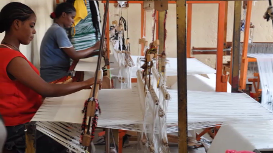

history
Foundation Hawassa city, formerly called A wassa, was founded near the Lake-Hawassa. It is located in between Shashamane, and Yirgalem town which are about 25 and 45 K.m away from the city. It is about 275 km far from Addis Ababa. Geographically, Hawassa city is located in between 7o5’Latitude North and 38.o28 longitude to East.The lake and the land along the edge of the lake have got different names in Sidama Language.The Lake has been called ‘Hawassa”, which means ‘big’ in Sidama language; and the land nearby it was called ‘ Ada’are ’, equivalent in meaning to the phrase “ “ “the field of cattle”. As it is comfortable place for rearing animals. Hence, the town established in the land adaare has got its name from the lake - Hawassa.The inherent attractiveness of the lake Hawassa was the major inspiring reason for the people to establish the town in this site. So far, the place was not occupied by residents; rather, it was used by pastoralists for raising their livestock. As the access of water and grasses for their cattle caught the attention of high land people, they used to make frequent visit to this area, and settled here. The Earliest Villages During its foundation, Hawassa town was classified in to four villages; namely, “Harar sefer”,”Addis Ababa Sefer”, “Korem Sefer” and “Wukiro sefer”. These were named so in accordance with origin of 404 commissioned soldiers camped in here coming from different corner of the country with the mission given by Emperor Haileselassie. The Emperor ordered them to replace jangle of “Adaare” by modern farm. This mission was put in to practice by support of Ato Mulugeta Bulli-the then Ministry of Community Development. To execute the mission, the soldiers came to Hawassa in two phases: the first 80 came from Addis Ababa in 1952 E.C ,and the rest from ‘Harar’,’korem’ and ‘Wukiro’ in 1953 E.C. Hence, the villages they occupied were named accordingly. Upgrading to Woreda Town Level Hawassa was promoted to woreda town by legal transference of Abela Woreda. When the conflict between Arsi Oromo and Sidama getting worse in Hawassa, Ras Mengesha Seyoum ordered Abela woreda officials to transfer to Hawassa, settle there, and resolve the dispute timely and easily. Even though Abela residents refused the transference, Emperor Haileselassie approved the proposal of Rash Mengesha irrespective of the appeal of Abela woreda residents. Consequently, Abela Woreda was transferred to Hawassa. After some times elaps, the new office and different hotelswere built in Hawassa. From hotels, Bekele Molla and WabiShebele No2 were a case in point. Moreover, well known individuals built their villas in the plot of land near by the lake. For instance, Afework Tekle, the Most Honorable, Maitre Artist, the World Laureate- build his villa near lake Hawassa. This gradual establishment and upgrading was made at the back side of present Telecommunication office of Hawassa. Welcome to Hawassa City,
Tourst Atraction
Cultural Atraction
The culture in the region is well known for its most diverse values than any part of the country. As a capital of Southern Region and Sidama zone, there are government bureaus and organizations who are promoting culture and availing facilities for tourists. Some tourist attractions are also found in nearby areas. Please click here to learn more about cultural attractions in Hawassa.
Historical Atraction
Even though Hawassa does not have rich historical attraction in and around the city, there are places that worth visiting once you are in Hawassa. As a one of young and well developed city in the country most of the attractions are attributed to natural and cultural values.

Natural Atraction
The natural attractions around Hawassa city are rich in vegetation, wildlife, hills and mountains and Water bodies. There are a number of endemic birds, fish and plants around the lake and nearby areas. There are also hot springs, reserved parks and water bodies you can visit and enjoy in and around Hawassa. You can have bird watching scene, fishing, mountain climbing, and sport on lake side beach areas, camp fire or lodging.

Fichee-Chambalaalla
Fichee-Chambalaalla is a New Year festival celebrated among the Sidama people. According to the oral tradition, Fichee commemorates a Sidama woman who visited her parents and relatives once a year after her marriage, bringing buurisame , a meal prepared from false banana, milk and butter, which was shared with neighbours. Fichee has since become a unifying symbol of the Sidama people. Each year, astrologers determine the correct date for the festival, which is then announced to the clans. Communal events take place throughout the festival, including traditional songs and dances. Every member participates irrespective of age, gender and social status. On the first day, children go from house to house to greet their neighbours, who serve them buurisame . During the festival, clan leaders advise the Sidama people to work hard, respect and support the elders,b and abstain from cutting down indigenous trees, begging, indolence, false testimony and theft. The festival therefore enhances equity, good governance, social cohesion, peaceful co-existence and integration among Sidama clans and the diverse ethnic groups in Ethiopia. Parents transmit the tradition to their children orally and through participation in events during the celebration. Women in particular, transfer knowledge and skills associated with hairdressing and preparation of buurisame to their daughters and other girls in their respective villages.
hawassa university
The origin of Hawassa University was the establishment of Debub University ("Southern" University) on 22 December 1998 via a government proclamation. Debub University originally consisted of Awassa College of Agriculture, Wondo Genet College of Forestry, and Dila Teachers' Education and Health Science College. Debub University was renamed Hawassa University on 17 February 2006. Hawassa University was reestablished on 23 May 2011. HU offers 81 undergraduate programs, 108 Masters programs, and 16 PhD programs. In March 2018, the student population was 48,558. HU operates seven campuses. Hawassa College of Agriculture College of Law and Governance College of Social Sciences and Humanities College of Natural and Computational Sciences College of Business and Economics College of Medicine and Health Science Wondo Genet College of Forestry and Natural Resources Institute of Technology School of Graduate Studies School of Continuing Education